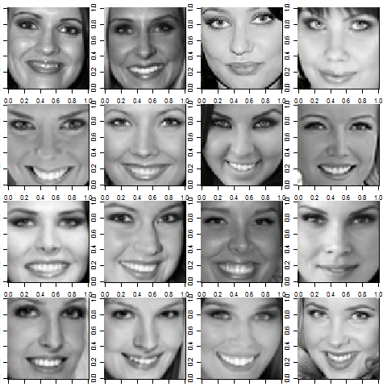

Miss Suomi 2016 ratkeaa perjantaina 13.5.2016. Luonnollisesti Tyyppiarvo yhdessä koko Suomen kansan kanssa jännittää sitä, kuka kruunataan maan kauneimmaksi. Mutta voisiko jännitystä helpottaa ja voittajan ennustaa tilastollisten menetelmien avulla?

16 Miss Suomi -kilpailijaa vuosilta 2007-2015
Tyyppiarvon toimitus on yhteistyössä Itä-Suomen yliopiston tutkija Mika Sutelan kanssa kerännyt kasaan aineiston, joka sisältää vuosien 2007 - 2016 Miss Suomi -kilpailijoiden kriittiset mitat, asuinpaikat, kasvokuvatiedot ja sijoitukset kilpailussa. Aineisto on tästä päivästä alkaen vapaasti saatavilla alla olevan linkin kautta.
Julistammekin nyt avoimen kilpailun vuoden 2016 Miss Suomi -kilpailun tulosten ennustamiseksi.
Voit tutkia aineistoa huvin vuoksi ohjeita seuraten (tarvitset R:n tai Pythonin) tai voit ottaa osaa ennustuskilpailuun seuraavien sääntöjen mukaisesti (englanniksi, sillä kilpailu on kansainvälinen). Palkinnot ovat tyypillisesti erittäin merkitsevät.
Miss Suomi -challenge 2016 rules
Your task is to predict the top three and the winner of the Miss Finland 2016 competition, using data from previous years competitions and competitors.
- Produce the following predictions before thursday 12.5.2016 23:59 and send them to tyyppiarvo@gmail.com: 1) The top three competitors 2) The winner
- Your predictions has to be based on a statistical (or computational) model. If you win, we will require code and a short description of your model.
- Use only the data provided for modelling. You can use additional pictures of the 2016 competitors to compute predictions if you wish.
The winner of the competition will get free coffee in Survomo during the whole next semester (fall 2016) and will get the title Moodin Missikeisari.
Tyyppiarvo toivottaa kaikille kilpailijoille onnea ja pieniä neliösummia!